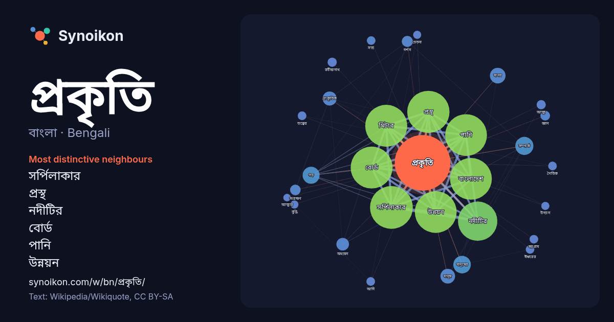

বাংলা · Bengali · popular word
প্রকৃতি
“nature” · The words found around it in 996 instances from Bengali Wikipedia, Wikiquote.

Most distinctive neighbours
- সর্পিলাকার 147×
- প্রস্থ 134×
- নদীটির 118×
- বোর্ড 114×
- পানি 83×
- উন্নয়ন 81×
- মিটার 68×
- বাংলাদেশ 51×
- গড় 17×
- মানব 16×
- মানুষের 11×
- প্রাকৃতিক 11×
- সম্পর্কে 10×
- অধ্যয়ন 10×
- দর্শন 9.6×
- স্বরগ্রাম 8.9×
- সংরক্ষণ 8.8×
- আত্মা 8.5×
- মানুষ 8.5×
- রবীন্দ্রনাথ 8.3×
× = how many times more often than in general Bengali Wikipedia text.
Most frequent neighbours
- সর্পিলাকার 196
- প্রস্থ 191
- মিটার 189
- বোর্ড 188
- উন্নয়ন 187
- পানি 187
- বাংলাদেশ 187
- নদীটির 166
- সম্পর্কে 35
- মানুষের 33
- গড় 31
- মানব 26
- মানুষ 23
- প্রাকৃতিক 21
- অধ্যয়ন 17
- পুরুষ 15
- অর্থাৎ 13
- দর্শন 13
- সময় 12
- সংরক্ষণ 12
In context
- প্রকৃতি (ইংরেজি : Nature) বলতে এই পৃথিবী তথা সমগ্র সৃষ্টিকে নির্দেশ করে। প্রকৃতি বলতে জাগতিক বিশ্বের মানব সৃষ্ট-নয় এমন দৃশ্য-অদৃশ্য বিষয় এবং জীবন ও প্রাণকে Wikipedia snippets · প্রকৃতি
- ধর্ম যেমন জৈন, এবং বৌদ্ধধর্মের গ্রন্থেও প্রকৃতি শব্দটি পাওয়া যায়। মূল সংস্কৃত থেকে উদ্ভূত ভারতীয় ভাষায়, প্রকৃতি সকল জীবন রূপের মেয়েলি দিককে বোঝায় এবং Wikipedia snippets · প্রকৃতি (হিন্দু দর্শন)
- প্রকৃতি কক্কর একজন ভারতীয় সঙ্গীতশিল্পী, তিনি ভারতের নতুন দিল্লিতে জন্মগ্রহণ করেছিলেন। তার কর্মজীবন শুরু হয় ২০১২ সালের বলিউড চলচ্চিত্র তুতিয়া দিল-এর Wikipedia snippets · প্রকৃতি কক্কর
- নরওয়ের অসলো ইউনিভার্সিটির প্রাকৃতিক ইতিহাসবিষয়ক জাদুঘরের উদ্দ্যোগে প্রকৃতি বিরুদ্ধ? (against nature?) শিরোনামে একটি প্রদর্শনী হয়। এই প্রদর্শনী 'প্রাণীজগতে Wikipedia snippets · প্রকৃতি বিরুদ্ধ?
- আন্তর্জাতিক প্রকৃতি ও প্রাকৃতিক সম্পদ সংরক্ষণ সংঘ (আইইউসিএন) (ইংরেজি: International Union for Conservation of Nature and Natural Resources (IUCN) প্রাকৃতিক Wikipedia snippets · প্রকৃতি সংরক্ষণের জন্য আন্তর্জাতিক ইউনিয়ন
- প্রকৃতি বলে। প্রত্যয় হলো এই প্রকৃতির পর যুক্ত হওয়া কিছু অর্থহীন শব্দাংশ, যা নতুন শব্দ তৈরি করে। মূলত প্রকৃতির সঙ্গে যুক্ত অর্থহীন শব্দাংশই প্রকৃতি-প্রত্যয়। Wikipedia snippets · প্রকৃতি-প্রত্যয়
- বুদ্ধ প্রকৃতি হলো বৌদ্ধ দর্শন মতে সমস্ত সংবেদনশীল প্রাণীর বুদ্ধ হওয়ার সম্ভাবনা বা সমস্ত প্রাণীর মধ্যে বিশুদ্ধ বুদ্ধ-সত্তার উপস্থিতি। বুদ্ধ-প্রকৃতি হলো Wikipedia snippets · বুদ্ধ প্রকৃতি
- থমসন প্রকৃতি উদ্যান সিঙ্গাপুরে উন্নত একটি প্রাকৃতিক উদ্যান। যা ৫০ হেক্টর জায়গার উপর প্রতিষ্ঠিত। এটি ২০১৯ সালে সকলের জন্য উন্মুক্ত হবে বলে আশা করা হচ্ছে Wikipedia snippets · থমসন প্রকৃতি উদ্যান
More Bengali words
- অরণ্য
- আয়না
- ইতিহাস
- ঈশ্বর
- কাজ
- কুকুর
- ক্ষমতা
- খাদ্য
- গান
- গ্রীষ্ম
- ঘড়ি
- ঘণ্টা
- ঘোড়া
- ছায়া
- জননী
- জলবায়ু
- জীবন
- ঝড়
- টাকা
- ট্রেন
- দারুচিনি
- দ্বীপ
- নক্ষত্র
- নীরবতা
- পরিবার
- পানি
- পাহাড়
- বাগান
- বিজ্ঞান
- বিড়াল
- বৃষ্টি
- ভাষা
- মধু
- মরুভূমি
- মানচিত্র
- মৃত্যু
- রাস্তা
- রুটি
- লবণ
- শরৎ
- শহর
- শিল্প
- শীত
- সত্য
- সময়
- সেতু
- সোনা
- স্বাস্থ্য
- হৃদয়
Precomputed on 2026-10-09 with default settings (±5 words, medium corpus). The interactive map can refresh it with live data.